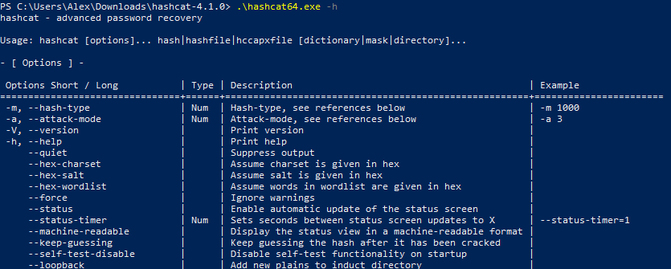

В последнее время стали задавать довольно много вопросов по использованию Hashcat. Многие из этих вопросов являются элементарными и даже уже рассмотрены в русскоязычной документации. Тем не менее, из-за большого объёма документации новичкам не всегда просто в ней сориентироваться и найти ответ на свой вопрос.
В данной инструкции я выделил самые базовые шаги по использованию Hashcat и детально расписал основные режимы работы программы. Эта инструкция рассчитана на абсолютных новичков. Надеюсь, она уменьшит количество «детских» вопросов.
Hashcat – это программа для взлома паролей, это мощный комбайн с большим количеством возможностей.
Тем не менее, это не самая простая в использовании программа – необходимо потратить время на её изучение. В данной инструкции раскрыты самые типичные ситуации работы с hashcat.
Будут рассмотрены как совсем «детские» вопросы, вроде того, «как запустить hashcat», так и довольно сложные, вроде правильного составления масок, пользовательских наборов символов, опции программы, решение проблем и прочее.
Особенностью hashcat является очень высокая скорость перебора паролей, которая достигается благодаря одновременному использованию всех видео карт, а также процессоров в системе. Возможна работа если установлено несколько видеокарт или карты разных производителей (например, AMD и NVIDIA).
Hashcat – это утилита командной строки. Т.е. у неё нет графического интерфейса в виде привычного окна. Поэтому пользователям Windows может показаться, что программа запускается необычным образом.
Для запуска программы необходимо открыть окно командной строки (либо PowerShell). Чтобы это сделать нажмите сочетание клавиш Win+x, и выберите Windows PowerShell:
Далее можно действовать двумя способами.
Первый вариант: можно просто перетащить исполнимый файл в окно командной строки. Исполнимым файлом является hashcat64.exe или hashcat32.exe в зависимости от вашей системы.
Второй вариант: в командной строке можно сменить текущую рабочую директорию на ту, где размещены исполнимые файлы hashcat. К примеру, у меня программа расположена в папке C:\Users\Alex\Downloads\hashcat-4.1.0\, чтобы сменить текущую рабочую папку используется команда cd, после которой указывается папка, в которую требуется перейти, в моём случае команда выглядет так:
|
cd C:\Users\Alex\Downloads\hashcat-4.1.0\ |
Как можно увидеть из скриншота, папка C:\WINDOWS\system32 изменена на C:\Users\Alex\Downloads\hashcat-4.1.0.
Теперь для запуска программы достаточно набрать имя исполнимого файла с указанием на текущую папку. Текущая папка обозначается точкой (.), затем необходимо поставить обратный слеш, получается так:
|
.\hashcat64.exe |
Поскольку мы не ввели никаких опций, то ничего не происходит, только выводится краткая подсказка.
На протяжении всей инструкции мы будем запускать исполнимый файл hashcat с опциями. Простейшей опцией является -h, если написать её, то будет выведена справка по использованию программы:
|
.\hashcat64.exe -h |

Скачайте hashcat с официального сайта по ссылке: https://hashcat.net/hashcat/
На сайте присутствует hashcat binaries и hashcat sources. Первое – это бинарные (исполнимые) файлы, второе – это исходный код. Нам нужны бинарники, т.е. hashcat binaries.
Как таковая установка hashcat не требуется, поскольку это портативная программа. Достаточно распаковать скаченный архив. Если у вас проблемы с распаковкой формата .7z, то используйте программу 7-Zip (архиватор с высокой степенью сжатия).
Для работы hashcat необходимо, чтобы были установлены свежие версии драйверов видеокарт.
Примечание: Если у вас Linux, то инструкцию по установке OpenCL смотрите в статье «Как в Linux взламывать пароли видеокартой и центральным процессором».
Необходимы следующие драйвера для видеокарт:
Скорее всего, драйверы для видеокарт AMD и NVIDIA в Windows у вас уже установлены, либо вы знаете как это сделать.
Поэтому я расскажу только об установке OpenCL Runtime и драйвера OpenCL.
OpenCL Runtime поставляется вместе с драйвером Windows, поэтому вам нужно скачать только один файл OpenCL Runtime for Intel Coreand Intel Xeon Processors for Windows, например, сейчас последней версией является: «OpenCL™ Runtime 16.1.2 for Intel® Core™ and Intel® Xeon® Processors for Windows* (64-bit & 32-bit)». Ранее они распологались на странице загрузки https://software.intel.com/en-us/articles/opencl-drivers#graph-win
Ранее Intel CPU Runtime for OpenCLApplications for Windows OS скачивался в одном файле вместе с графическим драйвером центрального процессора. Сейчас ситуация поменялась: графический драйвер процессора и CPU Runtime for OpenCLApplications разделены на два файла. Причём драйвер можно просто скачать с сайта, а для скачивания среды выполнения нужно регистрироваться на сайте Intel.
Чтобы скачать последнюю версию драйвера для CPU Intel перейдите на страницу драйверов и ПО, а затем выберите там Drivers. Например, если у вас версия Windows 10 и центральный процессор 6го, 7го, 8го, 9го поколений, Apollo Lake, Gemini Lake, Amber Lake или Whiskey Lake, тогда выберите опцию «Intel® Graphics - Windows® 10 DCH Drivers» (самая верхняя строка). Это самая последняя версия на момент написания 27.20.100.8190 Если у вас другая версия Windows или более старый процессор, то выберите соответствующий вариант загрузки. Скорее всего, придётся установить какую-то из версий 15.**
Чтобы скачать Intel® CPU Runtime for OpenCL™ Applications for Windows* OS, перейдите на эту страницу: https://registrationcenter.intel.com/en/products/download/3600/ (для доступа к файлу требуется регистрация).
Если ссылки станут неактуальными, то перейдите на эту страницу и попробуйте найти ссылки самостоятельно: https://software.intel.com/en-us/articles/opencl-drivers
Работа с программами в интерфейсе командной строки сильно отличается от работы в графическом пользовательском интерфейсе. В графическом интерфейсе мы нажимаем разные кнопки, передвигаем переключатели, ставим галочки и т.д. Ничего этого у программ с интерфейсом командной строки нет. Но при этом утилита командной строки может обладать даже большими возможностями, чем аналогичная программа с оконным интерфейсом. Чтобы можно было управлять функционалом консольных утилит, используются опции.
В выведенной справке вы наверняка заметили большое количество информации. Эта информация в большей части посвящена именно опциям.
Опции указываются после запускаемого файла через пробел. Некоторые опции требуют указания определённого значения. Некоторые используются без значений (такие опции ещё называют «флагами»).
Опции могут применяться по одной или сразу по несколько. С помощью опций можно очень точно настроить программу, использовать её на максимальных возможностях.
С одной опцией мы уже познакомились – это -h, которая выводит справку по программе, далее мы познакомимся с ещё большим количеством опций и их возможными значениями.
Следующей на очереди является опция -b.
Опцией -b запускается бенчмарк hashcat. Этот бенчмарк меряет, с какой скоростью перебираются пароли.
Запуск бенчмарка пройдёт успешно только если драйвера установлены правильно и всё в порядке. Т.е. бенчмарк это ещё и способ сделать проверку системы и hashcat.
Чтобы запустить проверку скорости перебора по самым популярным алгоритмам в командной строке выполните:
|
.\hashcat64.exe -b |
Для досрочной остановки нажмите CTRL+c. Этим сочетанием клавиш досрочно останавливаются все утилиты командной строки. Запомните эту комбинацию!
Скорость выводится для каждого устройства в отдельности, а также для всех устройств вместе взятых (запись Speed.Dev.#*).
Пример:
|
2 3 4 5 6 |
Hashmode: 2500 - WPA/WPA2 (Iterations: 4096)
Speed.Dev.#1.....: 5591 H/s (46.19ms) @ Accel:512 Loops:256 Thr:1 Vec:4 Speed.Dev.#2.....: 22374 H/s (69.23ms) @ Accel:128 Loops:32 Thr:256 Vec:1 Speed.Dev.#3.....: 171 H/s (1205.03ms) @ Accel:1024 Loops:128 Thr:1 Vec:4 Speed.Dev.#*.....: 28136 H/s |
Какое именно устройство какой имеет номер написано в самом начале при запуске программы, например:
|
2 3 4 5 6 7 8 |
OpenCL Platform #1: Intel(R) Corporation ======================================== * Device #1: Intel(R) Core(TM) i7-3630QM CPU @ 2.40GHz, 4085/16342 MB allocatable, 8MCU
OpenCL Platform #2: Advanced Micro Devices, Inc. ================================================ * Device #2: Capeverde, 1523/2048 MB allocatable, 10MCU * Device #3: Intel(R) Core(TM) i7-3630QM CPU @ 2.40GHz, 4085/16342 MB allocatable, 8MCU |
Сразу при запуске бенчмарка могут начаться выводиться ошибки. К примеру:
|
2 |
* Device #3: Not a native Intel OpenCL runtime. Expect massive speed loss. You can use --force to override, but do not report related errors. |
В ошибке сказано, что используется не родная среда выполнения OpenCL и ожидается значительное падение скорости. По этой причине устройства OpenCL будут пропущены (на скриншоте ниже это видно по слову skipped, т.е. пропущено). Если мы всё равно хотим их использовать, то нужно добавить опцию --force.
Запуск бенчмарка с двумя опциями:
|
.\hashcat64.exe -b --force |
Если у вас всё равно пропущены некоторые устройства, то вы можете добавить ещё одну опцию -D. После этой опции нужно добавить цифру или цифры, обозначающие тип устройства:
|
2 3 4 5 |
# | Типы устройств ===+============= 1 | CPU 2 | GPU 3 | FPGA, DSP, Co-Processor |
Обратите внимание на очень важную вещь – для опции используется заглавная буква. Регистр букв влияет на значение опции! Т.е. опция с буквой в другом регистре (большая вместо маленькой или маленькая вместо большой) может иметь совершенно другое значение, вплоть до противоположного.
Т.е. 1 – это центральные процессор, а 2 – это графический процессор, тогда полная команда вместе с выбором всех доступных у меня устройств будет выглядеть :
|
.\hashcat64.exe -b --force -D 1,2 |
Ошибка
|
clGetPlatformIDs(): CL_PLATFORM_NOT_FOUND_KHR |
возникает в том случае, если не найдено устройств, на которых может работать Hashcat. Если подходящие устройства имеются, значит всё дело в неправильных драйверах или в отсутствии драйверов.
Для hashcat отсутствуют официальные графические интерфейсы. Тем не менее имеется несколько интерфейсов, которые были созданы энтузиастами. Самым актуальным является этот: https://hashkiller.io/downloads/
Для установки графического интерфейса hashcat скачайте архив со страницы, на которую выше дана ссылка.
Распакуйте скаченный архив, в него уже включены:
Требования для работы графического интерфейса hashcat:
Hashcat вам нужно скачать отдельно, как это показано выше. Также у вас должны быть установлены необходимые драйверы.
После того, как вы распаковали Hashcat GUI и саму Hashcat, вам нужно папку с Hashcat переместить в папку с Hashcat GUI. Должна получиться примерно следующая структура папок:
Подсвечена папка с Hashcat – hashcat-4.1.0. Обратите внимание, что переименовывать каталог с хешкэт не нужно.
Для запуска программы дважды кликните файл HashcatGUI.exe. Посмотрите на графический интерфейс Hashcat:
На мой взгляд, он сложный. По моему субъективному ощущению, проще разобраться с опциями командной строки, чем с графическим интерфейсом в котором, между прочим, всё равно присутствуют не все функции.
Более того, без понимания концепций работы Hashcat, вряд ли вы что-то сможете сделать даже в графическом интерфейсе. Поэтому продолжайте чтение данной статьи, а к графическому интерфейсу мы вернёмся позже на страницах сайта HackWare.ru.
Запуск программы выполняется следующим образом:
|
hashcat [опции]... хеш|файл_хеша|файл_hccapx [словарь|маска|директория]... |
Здесь под hashcat подразумевается имя исполнимого файла, в моих примерах это .\hashcat64.exe.
После имени исполнимого файла через пробел следуют опции, с которыми мы уже начали знакомство.
Символ | (труба) в данном случае означает логическое «ИЛИ». Т.е. после опций следует ИЛИ файл, ИЛИ файл с хешем, ИЛИ файл hccapx. А затем через пробел указывается ИЛИ словарь, ИЛИ маска, ИЛИ директория – в зависимости от выбранной атаки.
Рассмотрим использование программы на конкретных примерах. Допустим нам дан хеш 53ab0dff8ecc7d5a18b4416d00568f02, который нужно взломать. Об этом хеше известно, что он получен с помощью алгоритма хеширования MD5 (т.е. это MD5 хеш). Также известно, что зашифрованная строка состоит только из маленьких букв английского алфавита и имеет длину от шести до десяти символов.
Далее будет показано, как запускать атаку, используя разнообразные приёмы перебора паролей.
Разные хеши вычисляются по различным алгоритмам. Аналогично и их взлом происходит по различным алгоритмам. Для того, чтобы правильно запустить атаку в Hashcat, необходимо указать тип атакуемого хеша. Для этого используется опция -m, после которой необходимо указать число, соответствующее выбранному типу хеша.
В исходных условиях нам дано, что предоставленный хеш является MD5. Значит на странице https://kali.tools/?p=3825 мы ищем «MD5»:
Напротив найденного хеша, смотрим столбец «#», т.е. номер. В нашем случае этот номер равен «0».
Значит, к команде запуска Hashcat необходимо добавить -m 0 - опция и её значение.
Если бы нам был дан хеш SHA1, то его номер бы был 100 и к команде запуска Hashcat мы бы добавили -m 100 и аналогично для любого другого алгоритма.
Обычно тип хеша известен исходя из источника, где этот хеш был получен. В случае, если достоверно неизвестен тип атакуемого хеша, его можно попытаться угадать с помощью специализированных инструментов, как это сделать описано в статье «Хеши: определение типа, подсчёт контрольных сумм, нестандартные и итерированные хеши».
Hashcat поддерживает различные режимы атак, самыми распространёнными являются:
Для указания режима атаки используется опция -a. С помощью неё можно указывать любой тип атаки, поддерживаемый в Hashcat, самыми популярными является атака по словарю – значение 0 – и атака по маске (брут-форс, полный перебор) – значение 3.
Т.е. если мы запускаем атаку по словарю, значит мы указываем -a 0, а если атаку по маске, то -a 3.
Запуск атаки по словарю происходит следующим образом:
|
hashcat [опции]... хеш|файл_хеша|файл_hccapx [путь_до_словаря]... |
Чтобы взломать наш хеш, создайте небольшой словарик – обычный текстовый файл с именем dictionary.txt и скопируйте в него:
Развернуть
Примечание: кстати, с Hashcat поставляется пример словаря, он называется example.dict.
Итак, на данном этапе у нас имеется всё необходимое для запуска атаки по словарю. Собираем всё воедино:
|
.\hashcat64.exe -m 0 -a 0 53ab0dff8ecc7d5a18b4416d00568f02 dictionary.txt |
Здесь:
Поскольку словарь очень маленький, то программа завершит свою работу очень быстро:
Результат работы программы:
|
2 3 4 5 6 7 8 9 10 11 12 13 14 15 16 17 18 19 20 21 22 23 24 |
53ab0dff8ecc7d5a18b4416d00568f02:hackware
Session..........: hashcat Status...........: Cracked Hash.Type........: MD5 Hash.Target......: 53ab0dff8ecc7d5a18b4416d00568f02 Time.Started.....: Mon Mar 05 07:23:25 2018 (0 secs) Time.Estimated...: Mon Mar 05 07:23:25 2018 (0 secs) Guess.Base.......: File (dictionary.txt) Guess.Queue......: 1/1 (100.00%) Speed.Dev.#1.....: 17783 H/s (0.04ms) @ Accel:1024 Loops:1 Thr:1 Vec:4 Speed.Dev.#2.....: 0 H/s (0.00ms) @ Accel:256 Loops:1 Thr:256 Vec:1 Speed.Dev.#3.....: 12530 H/s (0.03ms) @ Accel:1024 Loops:1 Thr:1 Vec:4 Speed.Dev.#*.....: 30313 H/s Recovered........: 1/1 (100.00%) Digests, 1/1 (100.00%) Salts Progress.........: 24/48 (50.00%) Rejected.........: 0/24 (0.00%) Restore.Point....: 0/48 (0.00%) Candidates.#1....: aaaaaaaaaa -> dancing2009 Candidates.#2....: [Copying] Candidates.#3....: danciotu -> hackware HWMon.Dev.#1.....: N/A HWMon.Dev.#2.....: Util: 37% Core: 800MHz Mem:1000MHz Bus:16 HWMon.Dev.#3.....: N/A |
Первая строка 53ab0dff8ecc7d5a18b4416d00568f02:hackware содержит атакуемый хеш и после двоеточия взломанный пароль – в данном случае это hackware.
Об успешном взлома говорит строка Status………..: Cracked
Хеш необязательно указывать в строке команды – он может быть записан в файл, тогда при запуске взлома указывается путь до файла, содержащего хеш. Например, создадим файл hashmd5.txt и скопируем в него 53ab0dff8ecc7d5a18b4416d00568f02.
Тогда запускаемая команда будет такой:
|
.\hashcat64.exe -m 0 -a 0 hashmd5.txt dictionary.txt |
Команда содержит те же опции, что и предыдущая, только вместо непосредственно хеша, мы указали путь до файла, содержащего взламываемый хеш.
Примечание: поскольку в учебных целях мы взламываем один и тот же хеш разными способами, то в случае если вы повторяете примеры, вы увидите сообщение:
|
INFO: All hashes found in potfile! Use --show to display them. |
Оно означает, что хеш, который вы пытаетесь взломать, уже был взломан ранее. Все взломанные хеши храняться в файле hashcat.potfile в той же директории, что и Hashcat. Это обычный текстовый файл, его можно открыть и посмотреть содержимое, в моём случае это:
|
53ab0dff8ecc7d5a18b4416d00568f02:hackware |
Этот файл можно удалить, чтобы запускать заново атаку на один и тот же хеш различными способами.
Также имеется опция --show, после которой нужно указать интересующий хеш:
|
.\hashcat64.exe --show 53ab0dff8ecc7d5a18b4416d00568f02 |
и если он найден в файле hashcat.potfile, то будет выведена информация о взломанном пароле.
В Hashcat нет такого режима как брут-форс – полного перебора паролей. Его поглатил режим «атака по маске». Это более гибкий тип атаки, который позволяет как реализовать полный перебор, так и перебор по тонко настроенным критериям.
В общем виде атака по маске имеет следующий вид:
|
hashcat [опции]... хеш|файл_хеша|файл_hccapx [маска]... |
Т.е. она аналогична предыдущей, но вместо словаря указывается маска.
Для составления масок используются наборы символов. Наборы символов в Hashcat бывают двух видов:
Начнём с разбора встроенных наборов символов, т.к. для многих ситуаций их бывает достаточно.
В Hashcat встроенными наборами символов являются:
|
2 3 4 5 6 7 8 9 10 |
? | Набор символов ===+========= l | abcdefghijklmnopqrstuvwxyz u | ABCDEFGHIJKLMNOPQRSTUVWXYZ d | 0123456789 h | 0123456789abcdef H | 0123456789ABCDEF s | !"#$%&'()*+,-./:;<=>?@[\]^_`{|}~ a | ?l?u?d?s b | 0x00 - 0xff |
Первая колонка означает условное обозначение набора символов. Для использования в масках, перед данным обозначением необходимо поставить знак вопроса. Например, ?u означает все заглавные буквы, ?d – все цифры.
Допустим, нам известно, что пароль состоит из четырёх символов, первыми двумя символами являются прописные буквы, а третьим и четвёртым символами являются цифры, тогда маска будет следующая:
|
?l?l?h?h |
Чтобы взломать пароль из нашего хеша, данного в качестве примера, необходимо составить маску, состоящую из восьми символов, каждый из которых является маленькой буквой. Это маска: ?l?l?l?l?l?l?l?l
|
.\hashcat64.exe -m 0 -a 3 53ab0dff8ecc7d5a18b4416d00568f02 ?l?l?l?l?l?l?l?l |
Здесь:
Менее чем через минуту пароль успешно взломан:
Обратите внимание на строку:
|
Progress.........: 15724838912/208827064576 (7.53%) |
Т.е. было перебрано 15724838912 вариантов паролей из 208827064576 общего количества вариантов.
Не всегда точно известна длина пароля. Даже по условию нашей задачи пароль имеет длину от шести до десяти символов.
Для того, чтобы генерировались пароли различной длины, имеются следующие опции:
Опция -i является необязательной. Если она используется, то это означает, что длина кандидатов в пароли не должна быть фиксированной, она должна увеличиваться по количеству символов.
Опция --increment-min также является необязательной. Она определяет минимальную длину кандидатов в пароли. Если используется опция -i, то значением --increment-min по умолчанию является 1.
И опция --increment-max является необязательной. Она определяет максимальную длину кандидатов в пароли. Если указана опция -i, но пропущена опция --increment-max, то её значением по умолчанию является длина маски.
Правила использования опций приращения маски:
Итак, скорректируем команду запуска для нашей задачи (пароль имеет длину от шести до десяти символов):
|
.\hashcat64.exe -m 0 -a 3 -i --increment-min=6 --increment-max=10 53ab0dff8ecc7d5a18b4416d00568f02 ?l?l?l?l?l?l?l?l?l?l |
Эта команда аналогична предыдущей, но здесь добавлены три новые опции (которые объяснены чуть выше):
А также увеличена длина маски до 10 символов: ?l?l?l?l?l?l?l?l?l?l (как это требуют правила использования опций приращения).
На перебор понадобилось чуть больше времени, поскольку дополнительно были опробованы кандидаты в пароли длиной 6 (+1 секунда на моём железе) и 7 символов (+22 секунды):
Обратите внимание на новое значение строки Status:
|
Status...........: Exhausted |
Оно означает, что перебраны все кандидаты в пароли, но ни один из них не подошёл.
Бывают ситуации, когда известны некоторые из символов пароля. Например, нам дан тот же самый хеш 53ab0dff8ecc7d5a18b4416d00568f02 и каким-то образом нам стало известно, что первыми тремя символами в пароле являются «hac». Тогда эти символы можно указать прямо в маске:
|
hac?l?l?l?l?l?l?l |
Получается команда:
|
.\hashcat64.exe -m 0 -a 3 -i --increment-min=6 --increment-max=10 53ab0dff8ecc7d5a18b4416d00568f02 hac?l?l?l?l?l?l?l |
Известные символы могут находится в любом месте маски – в начале, середине, конце; это могут быть одиночные символы или группы символов.
Выше уже перечислены встроенные наборы символов, которых обычно бывает достаточно. Тем не менее, вы можете задать до четырёх своих собственных, пользовательских наборов.
Предположим, нам известно, что первыми тремя символами в пароле являются цифры, причём не все, а только цифры от 0 до 4, четвёртым символом являются только большие буквы, а пятым и шестым символом являются буквы от a до h, а также цифры от 5 до 9.
Если в маске для первых трёх символов мы укажем просто цифры, то будут перебраны также заведомо не подходящие кандидаты в пароли – содержащие в первых трёх позициях цифры, не входящие в диапазон от 0 до 4. Нужно стараться всячески исключить заведомо неподходящие пароли. Это можно сделать с помощью пользовательских наборов символов.
Всего доступно четыре пользовательских набора символов. Они задаются в опциях и обозначаются цифрами. Но в опциях перед цифрой ставится дефис (например, первый пользовательский набор -1), а в маске перед цифрой ставится знак вопроса (например, использование символов из первого пользовательского набора ?1).
Итак, для решения поставленной задачи начинаем с того, что в опциях задаём необходимое количество пользовательских набора. Эти наборы могут состоять из непосредственно перечисленных символов, также можно использовать встроенные наборы символов, например ?l или ?d или ?u (в любых комбинациях).
Первый пользовательский набор символов для нашей задачи (только цифры от 0 до 4):
|
-1 01234 |
Второй пользовательский набор символов (буквы от a до h, а также цифры от 5 до 9)
|
-2 abcdefgh56789 |
Напомню – пользовательские наборы символов пишутся среди опций (т.е. до маски и до хеша).
Теперь создаём маску (первыми тремя символами в пароле являются цифры, причём не все, а только цифры от 0 до 4, четвёртым символом являются только большие буквы, а пятым и шестым символом являются буквы от a до h, а также цифры от 5 до 9):
|
?1?1?1?u?2?2 |
Разберём маску – первые три символа обозначены как ?1?1?1 (это единички, а не маленькая буква эль) – это символы из первого пользовательского набора. Далее идёт ?u – это встроенные набор символов, обозначающий только заглавные буквы. Последующие два символа обозначены как ?2?2 – это символы из второго пользовательского набора.
При указании пользовательских наборов можно использовать обозначения встроенных наборов символов, например:
|
-1 ?l?u |
обозначает первый пользовательский набор, состоящий только из больших и маленьких латинских букв.
А
|
-1 ?l?u?d |
означает первый пользовательский набор, состоящий только из больших и маленьких латинских букв, а также цифр.
Как уже было показано выше, в маске можно использовать пользовательские и встроенные наборы символов в любых комбинациях.
После создания сложных масок, особенно с использованием пользовательских наборов символов, хочется проверить, всё ли правильно мы сделали. Также, благодаря гибкости синтаксиса Hashcat её удобно использовать для генерации словарей по любым критериям.
Для того, чтобы только показать пароли без запуска взлома, используется опция --stdout. Эта опция требует -a 3 (режим атаки по маске). Поскольку взлом в этом случае не запускается, то не нужно указывать какие-либо хеши.
Пример генерации паролей для рассмотренной чуть выше задачи (известно, что первыми тремя символами в пароле являются цифры, причём не все, а только цифры от 0 до 4, четвёртым символом являются только большие буквы, а пятым и шестым символом являются буквы от a до h, а также цифры от 5 до 9):
|
.\hashcat64.exe --stdout -a 3 -1 01234 -2 abcdefgh56789 ?1?1?1?u?2?2 |
Поскольку паролей будет создано много (более полумиллиона), то вместо отображения на экране, их можно сохранить в файл. Для этого после основной команды нужно поставить символ > (означает перенаправление вывода в файл) и написать имя файла. Например, для сохранения всех паролей в файл lab1.dic, который будет создан в той же папке, где размещён исполнимый файл hashcat64.exe:
|
.\hashcat64.exe --stdout -a 3 -1 01234 -2 abcdefgh56789 ?1?1?1?u?2?2 > lab1.dic |
Если неизвестно, какие символы присутствуют в пароле, а также какая его длина, приходится перебирать все возможные варианты.
Условно можно выделить три допущения:
В чём проблема задать искать пароль сразу по всем символам? Обратимся к формуле количества возможных комбинаций:
количество символов(длина пароля)
То есть количество возможных символов в пароле в степени числа, которое является длиной пароля. Причём если мы не знаем длину, то необходимо перебрать:
количество символов1 + количество символов2 + количество символов3 + количество символов4 + количество символов5 + …
То есть нужно перебрать все пароли длиной в один символ, затем все пароли длиной в два символа и так далее.
На практике для многих алгоритмов взлома это означает невозможность подобрать пароль за разумный срок.
Поэтому если нет никаких представлений о пароле, то, пожалуй, можно начать с атаки по словарю. Она может оказаться эффективнее, чем ожидание в миллиарды лет полного перебора паролей.
Тем не менее, если нужно запустить полный перебор, когда в пароле могут быть большие и маленькие латинские буквы, а также цифры и длина пароля от 1 до 12, то нужно использовать следующие опции и маску:
|
-i --increment-min=1 --increment-max=12 -1 ?l?u?d ?1?1?1?1?1?1?1?1?1?1?1?1 |
Чтобы вывести все кандидаты в пароли или сохранить их в словарь:
|
hashcat --stdout -a 3 -i --increment-min=1 --increment-max=12 -1 ?l?u?d ?1?1?1?1?1?1?1?1?1?1?1?1 |
Если нужно запустить полный перебор, когда в пароле могут быть большие и маленькие латинские буквы, цифры, а также символы !"#$%&'()*+,-./:;<=>?@[\]^_`{|}~ и длина пароля от 1 до 12, то нужно использовать следующие опции и маску:
|
-i --increment-min=1 --increment-max=12 ?a?a?a?a?a?a?a?a?a?a?a?a |
Чтобы вывести все кандидаты в пароли или сохранить их в словарь:
|
hashcat --stdout -a 3 -i --increment-min=1 --increment-max=12 ?a?a?a?a?a?a?a?a?a?a?a?a |
В программу Hashcat встроена не только справка, но и примеры хешей. Они могут быть полезными, если у вас трудности с правильным написанием формата хешей.
Чтобы вывести сразу все примеры хешей, запустите программу с опцией --example-hashes:
|
.\hashcat64.exe --example-hashes |
Можно посмотреть образец одного определённого хеша. К примеру, мне нужно узнать, как выглядит хеш для взлома пароля архива RAR5; тогда я перехожу на страницу справки программы https://kali.tools/?p=578 и ищу RAR5 (используйте CTRL+f). Нахожу, что номер данного хеша 13000; далее я запускаю программу с опцией --example-hashes и уже известной нам опцией -m (после которой указывается номер режима хеша)
|
.\hashcat64.exe --example-hashes -m 13000 |
Итак, для взлома паролей от архивов RAR5 хеш должен иметь вид:
|
$rar5$16$38466361001011015181344360681307$15$00000000000000000000000000000000$8$cc7a30583e62676a |
В данной статье рассмотрены самые базовые концепции по работе с Hashcat, без понимания которых вряд ли получится запустить взлом пароля.
Для продолжения знакомства с программой рекомендуется к прочтению: